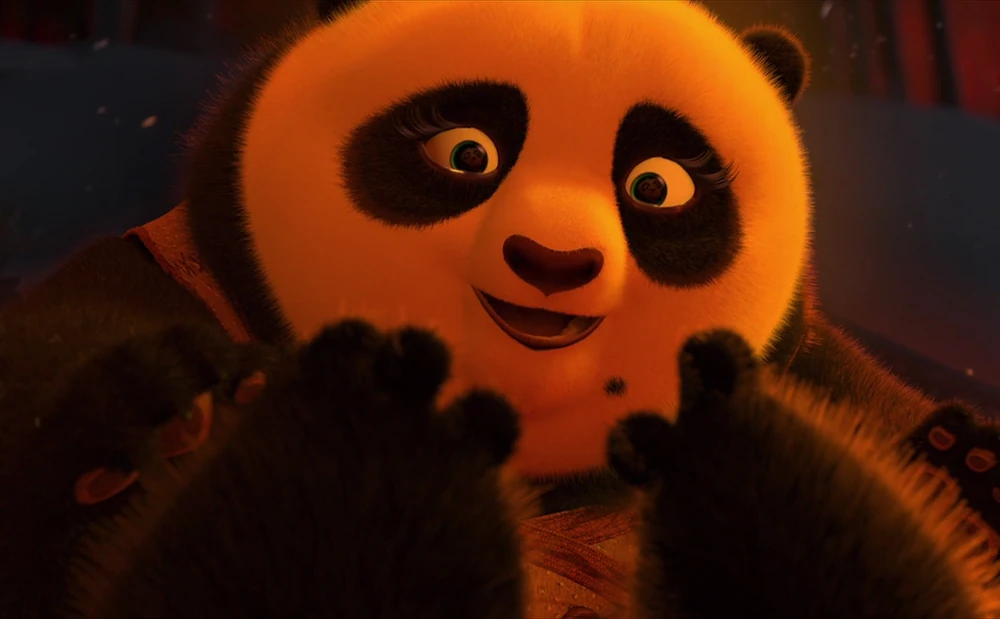
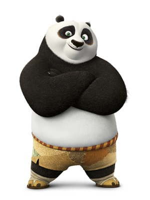

He was separated from Po when he was a baby, so Po was raised by his adoptive father,
Mr. Ping, a goose. Li is part of a large hidden panda village where all the pandas
live together and they also have a unique way of living.
Unlike most kung fu fighters, Li's strength lies in his ability to manipulate chi.

Po's Mom
About Po's Mother
Po's mother is never explicitly named and is only mentioned in flashbacks.
Her identity and backstory are largely unknown, we only got brief glimpses
into her life before her tragic death. From what we know, she was a loving
mother who cared deeply for her son.

Po
About Po
Po's full name is Po Ping, which means Precious Peace, or we know as Kung Fu Panda.
He is a giant panda who loves to eat, especially noodles and dumplings,
he is also very clumsy. However, He was chosen as the "Dragon Warrior"
in the first movie and his fighting style is modeled after bear-style Kung Fu.